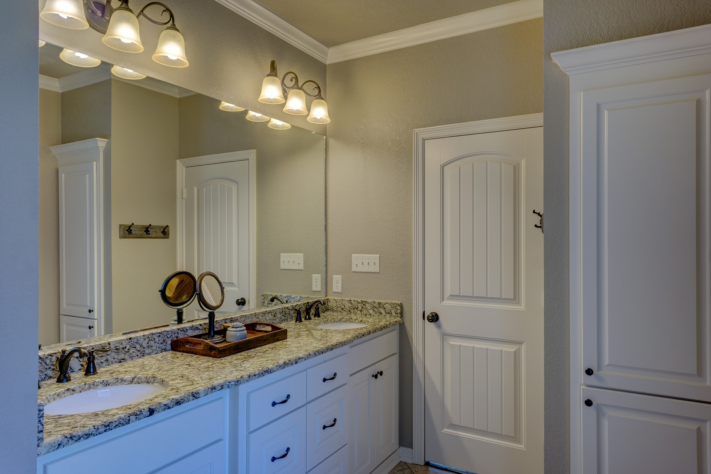
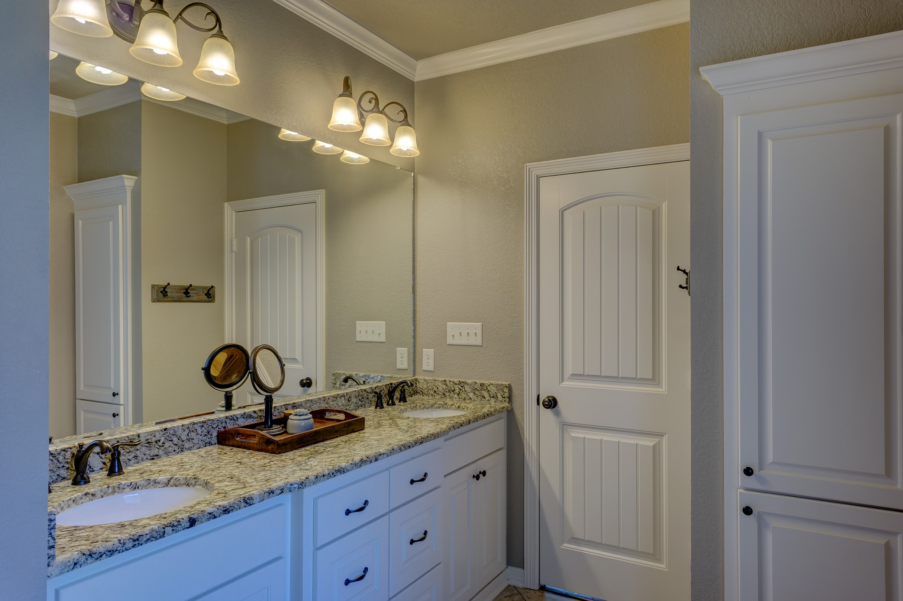

Chestnut Estates | Pine Lea
About

 

About | Pine Lea
Set within a pretty and thoughtfully designed mews development on the edge of the village, this beautifully presented two bedroom home also benefits from being within walking distance of the village centre.
Accommodation on the ground floor briefly comprises an entrance hall, 16ft modern fully integrated kitchen and dining area and a well-proportioned sitting room with French doors leading out onto the rear patio area. On the first floor there are two bedrooms, a dressing room/study, a modern en-suite and a family bathroom. Additional benefits include both paved and decked patio areas, a good size rear garden and carport.
Dimentions
SITTING ROOM 13′ 4" x 11′ 5" (4.06m x 3.48m)
KITCHEN 16′ 5" x 6′ 10" (5.01m x 2.10m)
DINING AREA 13′ 4" x 5′ 8" (4.06m x 1.73m)
MASTER BEDROOM 14′ 2" (max) x 9′ 2" (4.32m x 2.79m)
BEDROOM TWO 10′ 6" x 11′ 1" (max) (3.22m x 3.40m)
DRESSING ROOM/STUDY 13′ 4" x 7′ 6" (4.06m x 2.30m)
INSIDE The house is approached via a pathway leading to a covered entrance porch and obscured wooden and glass panelled front door which leads through to a well-proportioned hallway. From the hall there are stairs leading to the first floor, useful understairs storage space and a separate cloaks cupboard. A further door leads through to a good size beautiful kitchen which has been fitted with a modern range of Tewkesbury blue wall and base units with cupboards and drawers under. There are windows to the front and side and a full range of fitted appliances including an electric oven with gas hob and extractor over, fridge, freezer, dishwasher and washing machine. The room also has attractive ‘distressed’ wooden effect flooring and a dining area at one end of the room which has fitted seating and a TV point. An opening then leads through to a beautiful, light and airy sitting room which has a set of double glazed French doors with windows to either side leading out onto the rear patio area, attractive exposed brickwork to one wall, wall lights, TV and various power points.
On the first floor landing there is access to the loft and a door leading through to the master bedroom which has a double glazed window to the front and a fitted double wardrobe. A door to one side of the room leads through to a modern en-suite shower room which comprises a shower cubicle, wash hand basin, WC, heated towel rail and complementary tiling. Bedroom two, also a good size double room overlooks the front of the property and has a fitted wardrobe. The dressing room/study has a skeiling ceiling and Velux window to the side and is currently used as a home office by the vendors. The modern family bathroom has been fitted with a suite comprising a panel enclosed bath with shower attachment over, wash hand basin and low level WC.
OUTSIDE To the front of the property there is a well planted garden which overlooks the pretty green to the front of the house, with a carport to the side and access via the other side of the house that leads through to a good size rear garden. To the rear there is a paved patio area and steps leading up to the rest of the garden which is mainly laid to lawn with an additional decked patio area to one side and a garden shed.
DIRECTIONS From our office head out of Bishops Waltham along Winchester Road heading towards Durley and just passed the brow of the hill turn right into Pine Lea where the property can be found a short way along on the right hand side.